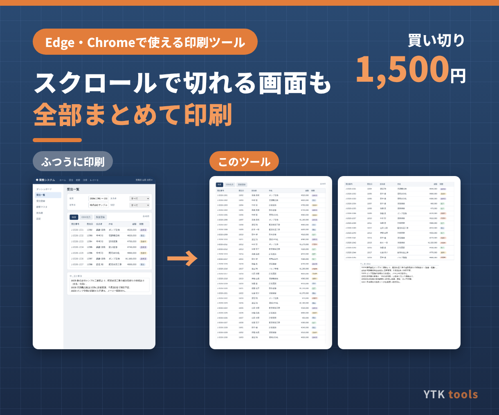
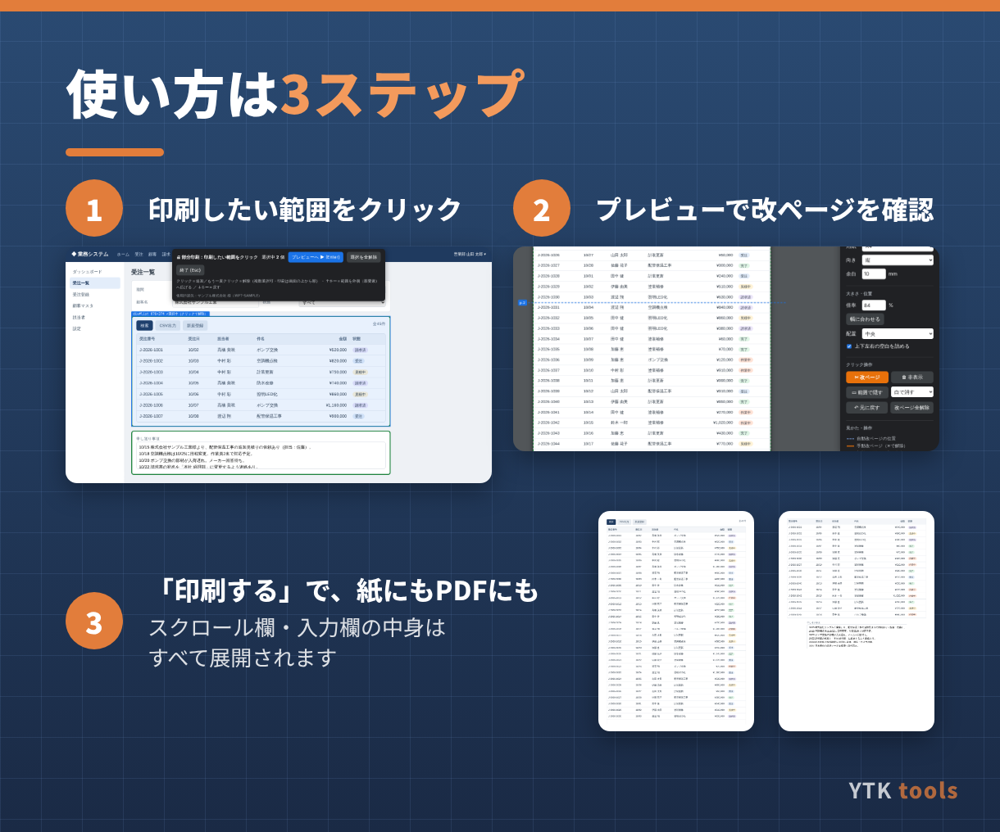
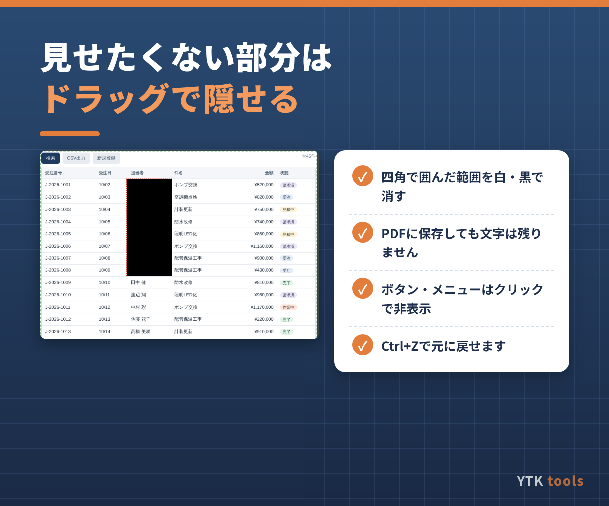

こんな方におすすめ
- Web画面を印刷すると、一覧がスクロール欄の途中で切れて続きが出ない
- 備考・申し送りなどの入力欄の文章が、途中までしか印刷されない
- メニューやボタンまで印刷されて見づらい
- 氏名や番号など、一部だけ隠して配付・保存したい
- 表の途中で変に改ページされて読みにくい
主な機能
- 印刷したい範囲をクリックで選択（複数可。離れた部分もまとめて印刷）
- スクロール欄・入力欄の中身をすべて展開して印刷
- 印刷前のプレビューで、改ページの位置を線で表示。クリックした所で改ページも可能
- ドラッグした四角い範囲を白・黒で隠す（PDFに保存しても文字は残りません）
- ボタン・メニューなど不要な部分はクリックで非表示
- 用紙（A4/A3/B4/B5）・縦横・余白・倍率の変更、幅に合わせた自動縮小



仕様・動作環境
| 形式 | ブックマークレット（Edge・Chromeのお気に入りバーに登録して使います。インストール・管理者権限は不要） |
|---|---|
| 動作環境 | Windows / Mac の Microsoft Edge または Google Chrome（最新版推奨）。Safari・Firefox・スマートフォンは非対応 |
| データ | 表示中の画面から印刷用の複製を作るだけで、外部への送信や元データの変更は行いません |
| ご注意 | 会社のポリシーでブックマークレットが禁止されている環境では使えません。別フレーム（iframe）内の部分は選べません |
| ご利用範囲 | ご購入1件につき、1つの会社・事業所内で何台のPCでも利用可 |
| 価格 | 1,500円（税込）・買い切り（月額費用なし） |